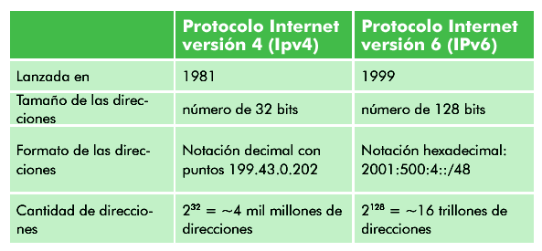
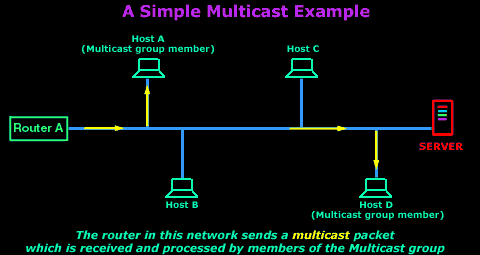

Homepage
Menu
Change
ADVANCED NETWORKS
INTERNET NETWORK LAYER
Internet multicast
What is?
In computer networking, multicast is group communication[1] where data transmission is addressed to a group of destination computers simultaneously. Multicast can be one-to-many or many-to-many distribution.[2] Multicast should not be confused with physical layer point-to-multipoint communication.

Group communication may either be application layer multicast or network assisted multicast, where the latter makes it possible for the source to efficiently send to the group in a single transmission. Copies are automatically created in other network elements, such as routers, switches and cellular network base stations, but only to network segments that currently contain members of the group. Network assisted multicast may be implemented at the data link layer using one-to-many addressing and switching such as Ethernet multicast addressing, Asynchronous Transfer Mode (ATM), point-to-multipoint virtual circuits (P2MP)[3] or Infiniband multicast. Network assisted multicast may also be implemented at the Internet layer using IP multicast. In IP multicast the implementation of the multicast concept occurs at the IP routing level, where routers create optimal distribution paths for datagrams sent to a multicast destination address.
